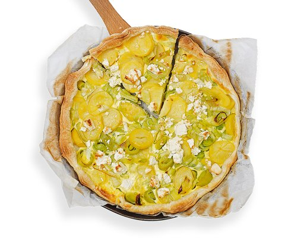

Kartoffel-Lauch-Wähe
4,5 von 6Backofen auf 180 °C vorheizen. Blätterteig samt Backpapier in ein Blech legen. Teigboden mit einer Gabel einstechen. Für den Guss 2 Eier, 1 Dl Rahm und 1 Dl Milch mischen, mit Salz und Pfeffer würzen. Feta in Stücke brechen. 500 g blanchierte Kartoffeln in dünne Scheiben, Lauch in Rondellen schneiden und zusammen bei mittlerer Hitze im Öl ca. 2 Minuten andünsten. Kartoffeln und Lauch auf dem Teigboden verteilen. Mit Feta bestreuen. Guss darüber giessen. In der Ofenmitte ca. 20 Minuten backen.
